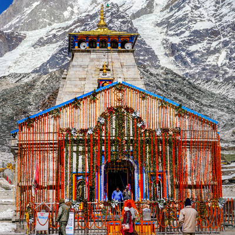

Some representative placeholder content for the first slide.
Second slide label
Some representative placeholder content for the second slide.
Third slide label
Some representative placeholder content for the third slide.
Fourth slide label
Some representative placeholder content for the third slide.
Char Dham Yatra
Uttarakhand, also known as Devbhoomi or the Land of Gods, is home to numerous temples and welcomes devotees all year round. Among the countless religious sites and circuits that devotees visit in Uttarakhand, one of the most prominent is the Char Dham Yatra. This Yatra or pilgrimage is a tour of four holy sites - Yamunotri, Gangotri, Kedarnath and Badrinath – nestled high up in the Himalayas. In Hindi, 'char' means four and 'dham' refers to religious destinations.
The high-altitude shrines remain shut for around six months every year, opening in summers (April or May) and closing with the onset of winter (October or November). It is believed that one should complete the Char Dham Yatra in a clockwise direction. Hence, the pilgrimage starts from Yamunotri, proceeds towards Gangotri, onto Kedarnath, and finally ends at Badrinath. The journey can be completed by road or by air (helicopter services are available). Some devotees even do a Do Dham Yatra or a pilgrimage to two shrines - Kedarnath and Badrinath.
The Yamunotri temple, lodged in a narrow gorge close to the source of River Yamuna (the second-most sacred Indian river after River Ganga) in Uttarkashi district, is dedicated to Goddess Yamuna. The district of Uttarkashi is also home to Gangotri dedicated to Goddess Ganga, the most sacred of all Indian rivers. Located in the Rudraprayag district lies Kedarnath, dedicated to Lord Shiva. Badrinath, home to the sacred Badrinarayan Temple, is dedicated to Lord Vishnu. The Char Dham Yatra is as divine as it is arduous but fulfills the soul!
Explore
Yamunotri
The sacred shrine of Yamunotri, source of the river Yamuna, is the westernmost shrine in the Garhwal Himalayas, perched atop a flank of Bandar Poonch Parvat.
Gangotri
the most sacred of all rivers, Ganges (or Ganga), descended from heaven to earth at Gangotri, when Lord Shiva released the mighty river from his locks.
Badrinath
Dedicated to Lord Vishnu, the Badrinath Temple is one of the most important pilgrimage sites in India. It is among the four holy places or char dham.

Kedarnath
According to Hindu legends, the temple was initially built by the Pandavas, and is one of the twelve Jyotirlingas, the holiest Hindu shrines of Shiva.
Advance reservations are available at following offices